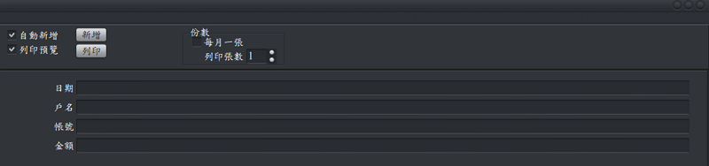

輸入區域
輸入區域位於主視窗右邊，顯示目前文件的畫面。資料直接填在文件上對應的位置，所見即所印，填好即可預覽或列印。
- 於工作頁選好文件及資料擁有者，這裡即顯示該文件。
- 依序填入各欄資料；有代號的欄位可輸入代號或關鍵字，帶入客戶、項目等資料。
- 按上方「列印」；勾選「列印預覽」時，會先顯示預覽畫面。
備註：
- 「份數」可設定列印張數；標籤類文件可指定起始格或印滿本頁。
- 螢幕解析度較低時，可拖拉與工作頁之間的分隔線，或調整「縮放」，讓文件完整顯示，方便輸入。
- 列印後的資料會存入工作頁的「列印記錄」。
